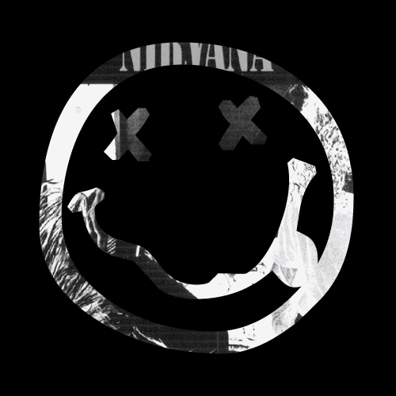

My thoughts about "Nirvana"

I found out about this band quite a long time ago and it immediately caught me with its sound. I started my way with the song "Smells Like Teen Spirit" as it was probably for everyone who loves this band now.
But a lot of time passed, I listened to the music, enjoyed it and my media library was filled with more and more songs by Cobain and his friends. I began to like it more and more. On top of that, a very good friend of mine advised some very good songs that I hadn't listened to yet.
These songs have become a big part of my life and also helps me to deal with various difficulties in life. Therefore, from my experience, and if you think about it objectively, I advise to get acquainted with this group to all ages, starting from teenagers